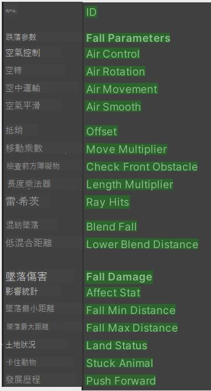
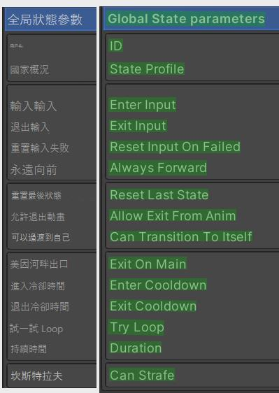
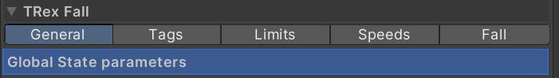

< FALL > 落下




Fall 落下 (必要安裝)
控制角色落地，( 動作也可是空的 )
Fall 機制是使用
Animal [Hip Chest ]地面射線來判斷
角色與地形碰撞體高度對應關係
Animal \ States \
1. Add News " Fall " States
Fall 使用 Chest 的線判斷角色
離地高度，離開地板視為 "Fall"
被觸發，落下直到 Chest Ray
碰到地面 重新觸發" Locomotion "
2. 角色 \ Animator
2-1 Create Sud-SeateMachine " Fall "
2-2 Set On state > State " 2 "
2-3 Sud-SeateMachine Fall Add " AnimClip"
2-4 you Can set Jump Animation " Fall "
3. Animal \ States \
3-1 Select Fall " States
After selecting, the ( Global States Parameters )
3-2 Set Fall [ Offset " -0.2 " ] Set [ Move Mullti "0.2 "]